Last updated: 2025-02-10
Checks: 7 0
Knit directory: chapter_IDseq_tech/
This reproducible R Markdown analysis was created with workflowr (version 1.7.1). The Checks tab describes the reproducibility checks that were applied when the results were created. The Past versions tab lists the development history.
Great! Since the R Markdown file has been committed to the Git repository, you know the exact version of the code that produced these results.
Great job! The global environment was empty. Objects defined in the global environment can affect the analysis in your R Markdown file in unknown ways. For reproduciblity it’s best to always run the code in an empty environment.
The command set.seed(20240806) was run prior to running
the code in the R Markdown file. Setting a seed ensures that any results
that rely on randomness, e.g. subsampling or permutations, are
reproducible.
Great job! Recording the operating system, R version, and package versions is critical for reproducibility.
Nice! There were no cached chunks for this analysis, so you can be confident that you successfully produced the results during this run.
Great job! Using relative paths to the files within your workflowr project makes it easier to run your code on other machines.
Great! You are using Git for version control. Tracking code development and connecting the code version to the results is critical for reproducibility.
The results in this page were generated with repository version 31f8444. See the Past versions tab to see a history of the changes made to the R Markdown and HTML files.
Note that you need to be careful to ensure that all relevant files for
the analysis have been committed to Git prior to generating the results
(you can use wflow_publish or
wflow_git_commit). workflowr only checks the R Markdown
file, but you know if there are other scripts or data files that it
depends on. Below is the status of the Git repository when the results
were generated:
Ignored files:
Ignored: .Rhistory
Ignored: .Rproj.user/
Ignored: analysis/figure/
Untracked files:
Untracked: code/DS075_combined_analysis.R
Untracked: code/packages_FACS.R
Untracked: code/packages_seq.R
Untracked: data/BB014_LibraryIndex/
Untracked: data/DS027_FirstIDseq/
Untracked: data/DS055_LibraryKlenowAmp/
Untracked: data/DS056_LibraryAmp1/
Untracked: data/DS059_LibraryByproducts/
Untracked: data/DS072_LibraryAmp2/
Untracked: data/DS075_BarcodeCheck/
Untracked: data/DS078_Blocking1/
Untracked: data/DS080_Blocking2/
Untracked: data/DS084_BioInhibition/
Untracked: data/DS091_ImmunostainingBio/
Untracked: data/DSxxx_Conjugations/
Untracked: data/annotated_gels_batch1-10_digital.pptx
Untracked: output/BioAnalyzer_plots/
Untracked: output/DS075_BarcodeCheck/
Untracked: output/DS078_Blocking1/
Untracked: output/DS091_ImmunostainingBio/
Untracked: output/figures/
Untracked: output/network_visual/
Unstaged changes:
Deleted: analysis/about.Rmd
Deleted: analysis/c_flow_vis.Rmd
Note that any generated files, e.g. HTML, png, CSS, etc., are not included in this status report because it is ok for generated content to have uncommitted changes.
These are the previous versions of the repository in which changes were
made to the R Markdown (analysis/y_chapter_main.Rmd) and
HTML (docs/y_chapter_main.html) files. If you’ve configured
a remote Git repository (see ?wflow_git_remote), click on
the hyperlinks in the table below to view the files as they were in that
past version.
| File | Version | Author | Date | Message |
|---|---|---|---|---|
| Rmd | 31f8444 | mwitmond | 2025-02-10 | Revised ch3 figs |
| html | a92dfa0 | mwitmond | 2024-08-06 | Build site. |
| Rmd | 4e7f883 | mwitmond | 2024-08-06 | Publish initial project files |
row_order = c("A", "B", "C", "D", "E", "F", "G", "H")
col_order = c("1", "2", "3", "4", "5", "6", "7", "8", "9", "10", "11", "12")
panel_labels <- c("a", "b", "c","d", "e", "f", "g", "h", "i", "j", "k", "l", "m")
PANEL_labels <- c("A", "B", "C","D", "E", "F", "G", "H", "I", "J", "K", "L", "M")
textsize <- theme(axis.text.x = element_text(colour = "grey", size = 11), #, face = "bold"
axis.text.y = element_text(colour = "grey", size = 11),
axis.title = element_text(colour = "black", size = 12),
legend.title = element_text(colour = "black", size = 12),
# legend.title = element_blank(),
legend.text = element_text(colour = "grey", size = 11),
strip.text.x = element_text(colour = "black", size = 12)
)
textsize_small <- theme(text = element_text(size = 8, family = "sans", colour = "black"),
plot.title = element_text(size = 9)
)
textsize_medium <- theme(text = element_text(size = 10, family = "sans", colour = "black"),
strip.text.x = element_text(size = 10),
plot.title = element_text(size = 10)
)colors_nord <- c("#2e3440", "#3b4252", "#434c5e", "#4c566a",
"#d8dee9", "#e5e9f0", "#eceff4",
"#8fbcbb", "#88c0d0", "#81a1c1", "#5e81ac",
"#bf616a", "#d08770", "#ebcb8b", "#a3be8c", "#b48ead")
colors_toll_bright <- c("#4477AA", "#66CCEE", "#228833", "#CCBB44", "#EE6677", "#AA3377", "#BBBBBB")
colors_toll_mute <- c("#332288", "#88CCEE", "#44AA99", "#117733", "#999933", "#DDCC77", "#CC6677", "#882255", "#AA4499", "#DDDDDD")
colors_toll_br <- c("#364B9A", "#4A7BB7", "#6EA6CD", "#98CAE1", "#C2E4EF", "#EAECCC", "#FEDA8B", "#FDB366", "#F67A4B", "#DD3D2D", "#A50026")
colors_blue9 <- c("#f7fbff", "#deebf7", "#c6dbef", "#9ecae1", "#6baed6", "#4292c6", "#2171b5", "#08519c", "#08306b")
colors_green9 <- c("#f7fcf5", "#e5f5e0", "#c7e9c0", "#a1d99b", "#74c476", "#41ab5d", "#238b45", "#006d2c", "#00441b")
colors_purple9 <- c("#fcfbfd", "#efedf5", "#dadaeb", "#bcbddc", "#9e9ac8", "#807dba", "#6a51a3", "#54278f", "#3f007d")
colors_red9 <- c("#fff5f0", "#fee0d2", "#fcbba1", "#fc9272", "#fb6a4a", "#ef3b2c", "#cb181d", "#a50f15", "#67000d")
colors_orange9 <- c("#fff5eb", "#fee6ce", "#fdd0a2", "#fdae6b", "#fd8d3c", "#f16913", "#d94801", "#a63603", "#7f2704")
colors_grey9 <- c("#ffffff", "#f0f0f0", "#d9d9d9", "#bdbdbd", "#969696", "#737373", "#525252", "#252525", "#000000")
colors_yb9 <- c("#ffffd9", "#edf8b1", "#c7e9b4", "#7fcdbb", "#41b6c4", "#1d91c0", "#225ea8", "#253494", "#081d58")
colors_pr9 <- c("#f7f4f9", "#e7e1ef", "#d4b9da", "#c994c7", "#df65b0", "#e7298a", "#ce1256", "#980043", "#67001f")
# Variable-specific colors
# colors_stim <- c("PBS" = "#737373", "anti-Ig" = "#74c476", "H2O2" = "#6EA6CD",
# "Basal" = "#737373", "Activated (anti-Ig)" = "#74c476", "Activated (H2O2)" = "#6EA6CD")
colors_stim <- c("PBS" = "#737373", "anti-Ig" = "#2cb142", "H2O2" = "#66CCEE",
"Basal" = "#737373", "Activated (anti-Ig)" = "#2cb142", "Activated (H2O2)" = "#66CCEE")
colors_cell <- c("HBL1" = "#df65b0", "DAUDI" = "#41b6c4", "OCI-Ly8" = "#332288")
# colors_cell_alt <- c("HBL1" = "#AA4499", "OCI-Ly8" = "#332288")
colors_block_buf <- c("ID-seq" = "#88CCEE",
"RAID" = "#44AA99",
"QuRIE-seq" = "#117733",
"Ab-seq" = "#AA4499",
"CITE-seq" = "#CC6677",
"NEAT-seq" = "#A50026")
colors_stain_conc <- c("0.5 ug/mL" = "#3f007d",
"0.25 ug/mL" = "#54278f",
"0.125 ug/mL" = "#807dba",
"0.063 ug/mL" = "#9e9ac8",
"0.031 ug/mL" = "#bcbddc",
"0 ug/mL" = "#d9d9d9")
colors_stain_cell <- c("0M (no cell)" = "#d9d9d9", "0.25M" = "#9e9ac8", "0.5M" = "#54278f")
colors_stain_volume <- c("20 uL" = "#fdbe85", "30 uL" = "#fd8d3c", "40 uL" = "#e6550d")Detailed overview of the adapted ID-seq methodology.
Input: - BioRender schematic figure
# Placeholder
fig1_panelA <- ggplot() +
geom_blank() +
scale_x_continuous(limits = c(0, 10)) +
scale_y_continuous(limits = c(0, 10)) +
# labs(title = "BCR signaling network") +
theme_bw() +
theme(axis.text = element_text(color = "white"),
axis.ticks = element_blank(),
panel.grid = element_blank()) +
textsize_small
# fig1_panelA
# PNG
png_fig1_panelA <- image_read("output/figures/non_R_figs/ch3_IDseq_workflow_detailed.png") %>%
image_ggplot()
png_fig1_panelA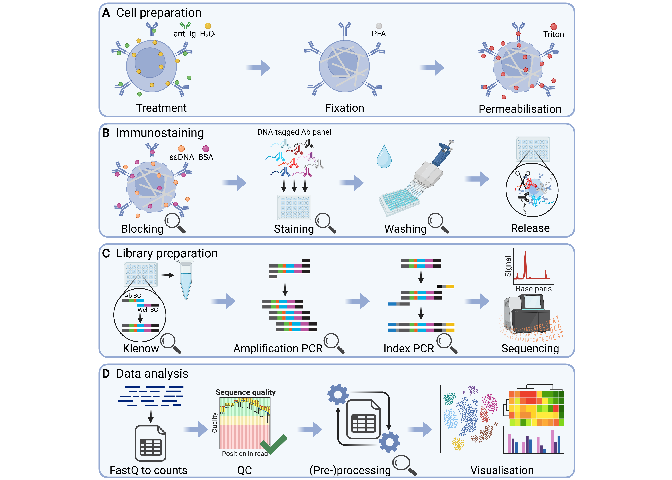
# Combine all panels of the figure
png_fig1_panelA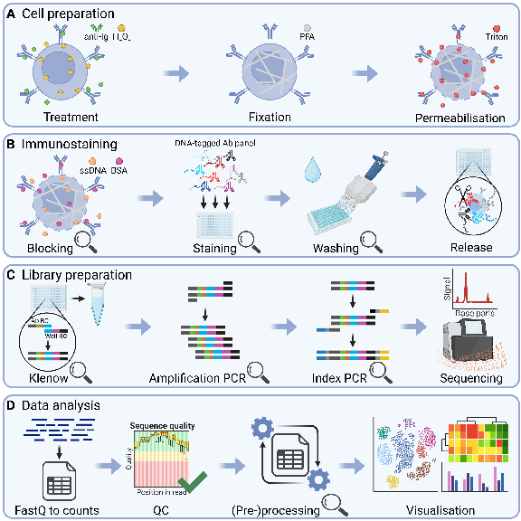
# Save figure as pdf, jpg, and png
ggsave(
fig1_panelA,
filename = "output/figures/main_fig1_place.pdf",
width = 6,
height = 6,
units = "in",
dpi = 300
)
ggsave(
fig1_panelA,
filename = "output/figures/main_fig1_place.jpg",
width = 6,
height = 6,
units = "in",
dpi = 300
)Figure 1: Detailed overview of the adapted ID-seq methodology.
# Remove unnecessary files to clear up memory
rm(list = ls(pattern = "fig1"))
rm(list = ls(pattern = "png"))
rm(list = ls(pattern = "results_"))
rm(list = ls(pattern = "volc_"))
rm(list = ls(pattern = "list_"))
rm(list = ls(pattern = "names_"))
rm(list = ls(pattern = "titles_"))
rm(list = ls(pattern = "data_"))
rm(list = ls(pattern = "heat_"))
rm(list = ls(pattern = "rld"))
rm(list = ls(pattern = "pca"))
gc() used (Mb) gc trigger (Mb) max used (Mb)
Ncells 10594142 565.8 17081285 912.3 12780881 682.6
Vcells 18433348 140.7 68199703 520.4 84166888 642.2The ID-seq antibody panel, comprising of 111 targets, was constructed by conjugating antibodies to unique DNA oligo barcodes.
Input: - BioRender schematic figures
Conjugation gel images
Conjugation barcode count table
fig2_data <- meta_Abs_OG <- read_excel("data/DSxxx_Conjugations/Ab_barcode_counts.xlsx")# Placeholder
fig2_panelA <- ggplot() +
geom_blank() +
scale_x_continuous(limits = c(0, 10)) +
scale_y_continuous(limits = c(0, 10)) +
# labs(title = "BCR signaling network") +
theme_bw() +
theme(axis.text = element_text(color = "white"),
axis.ticks = element_blank(),
panel.grid = element_blank()) +
textsize_small
# fig2_panelA
# PNG
png_fig2_panelA <- image_read("output/figures/non_R_figs/ch3_Bcell_network_panel_202411.png") %>%
image_ggplot()
png_fig2_panelA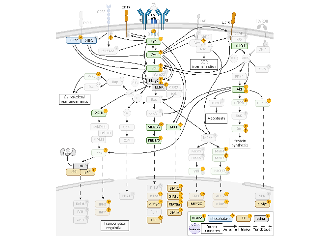
# Placeholder
fig2_panelB <- ggplot() +
geom_blank() +
scale_x_continuous(limits = c(0, 10)) +
scale_y_continuous(limits = c(0, 10)) +
# labs(title = "BCR signaling network") +
theme_bw() +
theme(axis.text = element_text(color = "white"),
axis.ticks = element_blank(),
panel.grid = element_blank()) +
textsize_small
# fig2_panelB
# PNG
png_fig2_panelB <- image_read("output/figures/non_R_figs/ch3_Ab_well_barcode_design.png") %>%
image_ggplot()
png_fig2_panelB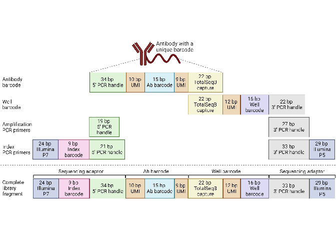
# Placeholder
fig2_panelC <- ggplot() +
geom_blank() +
scale_x_continuous(limits = c(0, 10)) +
scale_y_continuous(limits = c(0, 10)) +
# labs(title = "BCR signaling network") +
theme_bw() +
theme(axis.text = element_text(color = "white"),
axis.ticks = element_blank(),
panel.grid = element_blank()) +
textsize_small
# fig2_panelC
# PNG
png_fig2_panelC <- image_read("output/figures/non_R_figs/conjugation_example_2.3.png") %>%
image_ggplot(interpolate = TRUE)
png_fig2_panelC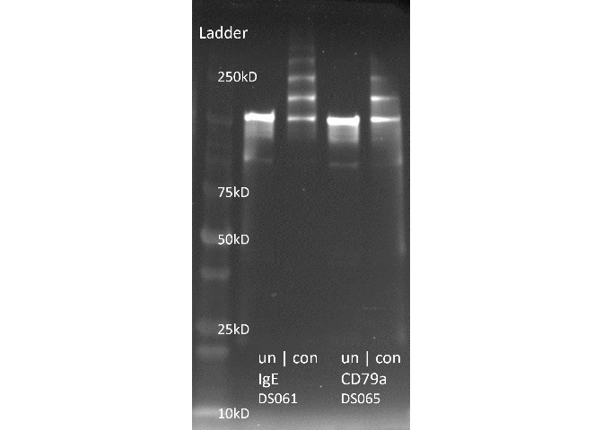
# Placeholder
fig2_panelD <- ggplot() +
geom_blank() +
scale_x_continuous(limits = c(0, 10)) +
scale_y_continuous(limits = c(0, 10)) +
# labs(title = "BCR signaling network") +
theme_bw() +
theme(axis.text = element_text(color = "white"),
axis.ticks = element_blank(),
panel.grid = element_blank()) +
textsize_small
# fig2_panelD
# PNG
png_fig2_panelD <- image_read("output/figures/non_R_figs/conjugation_example_2.4.png") %>%
image_ggplot(interpolate = TRUE)
png_fig2_panelD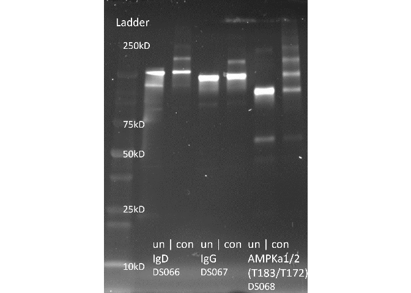
# Select data
# Figure
fig2_panelE <- ggplot(fig2_data) +
geom_bar(aes(x = barcode_count, group = factor(barcode_count), fill = factor(barcode_count))) +
scale_fill_manual(values = colors_blue9[c(3, 5, 7, 9)]) +
scale_y_continuous(breaks = c(0, 10, 20, 30, 40, 50)) +
labs(x = "Max nr of barcodes\nattached", y = "Nr of antibodies") +
theme_bw() +
theme(panel.grid.minor.y = element_blank(), panel.grid.major.x = element_blank(), panel.grid.minor.x = element_blank(), legend.key.size = unit(0.5, "cm"), legend.spacing.y = unit(0.2, "cm"), legend.box.spacing = unit(0.1, "cm"), legend.position = "none", legend.justification = "right") +
textsize_medium
fig2_panelE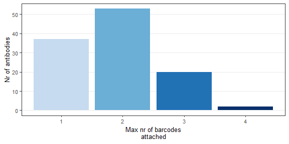
# Combine all panels of the figure
# fig2_CDEF <- plot_grid(png_fig2_panelC, png_fig2_panelD, png_fig2_panelE, fig2_panelF, labels = PANEL_labels[c(3:6)], ncol = 2, rel_widths = c(1, 1.4), rel_heights = c(1, 1), label_size = 10)
fig2_CD <- plot_grid(png_fig2_panelC, png_fig2_panelD, labels = PANEL_labels[c(3:4)], ncol = 2, rel_widths = c(1, 1.355),label_size = 10)
fig2_CDE <- plot_grid(fig2_CD, fig2_panelE, labels = c(NA, PANEL_labels[c(5)]), ncol = 1, rel_heights = c(1.15, 1),label_size = 10)
fig2_top <- plot_grid(png_fig2_panelA, fig2_CDE, labels = PANEL_labels[1], nrow = 1, rel_widths = c(1.55, 1), label_size = 10)
fig2 <- plot_grid(fig2_top, png_fig2_panelB, labels = c(NA, PANEL_labels[2]), ncol = 1, rel_heights = c(1.5, 1), label_size = 10)
fig2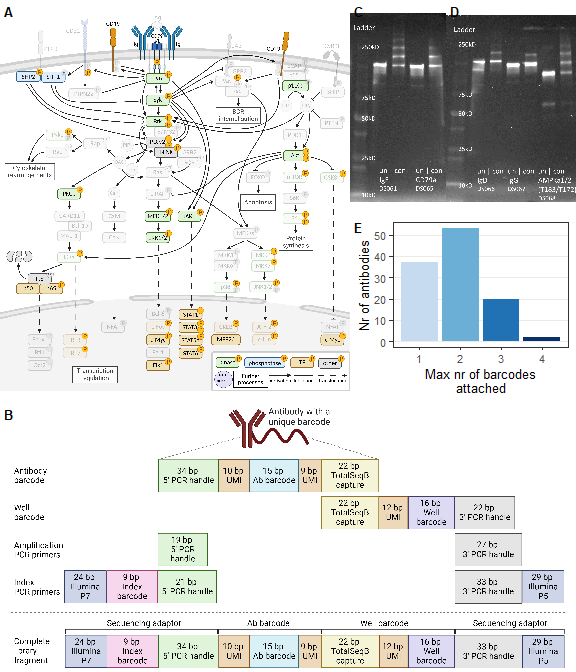
# Save figure as pdf, jpg, and png
ggsave(
fig2,
filename = "output/figures/main_fig2.pdf",
width = 6,
height = 7,
units = "in",
dpi = 300
)
ggsave(
fig2,
filename = "output/figures/main_fig2.jpg",
width = 6,
height = 7,
units = "in",
dpi = 300
)Figure 2: The ID-seq antibody panel, comprising of 111 targets, was constructed by conjugating antibodies to unique DNA oligo barcodes.
# Remove unnecessary files to clear up memory
rm(list = ls(pattern = "fig2"))
rm(list = ls(pattern = "png"))
rm(list = ls(pattern = "results_"))
rm(list = ls(pattern = "volc_"))
rm(list = ls(pattern = "list_"))
rm(list = ls(pattern = "names_"))
rm(list = ls(pattern = "titles_"))
rm(list = ls(pattern = "data_"))
rm(list = ls(pattern = "heat_"))
rm(list = ls(pattern = "rld"))
rm(list = ls(pattern = "pca"))
gc() used (Mb) gc trigger (Mb) max used (Mb)
Ncells 10678595 570.3 17081285 912.3 17081285 912.3
Vcells 42722313 326.0 132198610 1008.6 130989777 999.4Adjustments in the immunostaining section of the experimental protocol improved the quality of the ID-seq data while maintaining efficient reagent use.
Input:
DS078 ID-seq data
DS091 ID-seq data
# ID-seq data DS078 (counts per well/sample and mean per condition)
fig3_data_id_DS078 <- read_csv("output/DS078_Blocking1/IDseq_ann/IDseq_data_sample.csv")
fig3_mean_id_DS078 <- read_csv("output/DS078_Blocking1/IDseq_ann/IDseq_data_condition.csv")
# ID-seq data DS091 (counts per well/sample and mean per condition)
fig3_data_id_DS091 <- read_csv("output/DS091_ImmunostainingBio/IDseq_ann/IDseq_data_sample.csv")
fig3_mean_id_DS091 <- read_csv("output/DS091_ImmunostainingBio/IDseq_ann/IDseq_data_condition.csv")fig3_block_buf <- c("ID-seq", "RAID", "QuRIE-seq", "CITE-seq", "Ab-seq", "NEAT-seq")
fig3_cells <- c("HBL1", "Jurkat", "No cells")
fig3_stim <- c("Activated", "Basal", "Control")
fig3_stim_label <- c("Act.", "Bas.", "Ctrl")
fig3_stim_stain <- c("Activated", "Activated (no stain)", "Basal", "Basal (no stain)", "Control", "Control (no stain)")
fig3_stim_stain_label <- c("Activated", "Activated\n(no stain)", "Basal", "Basal\n(no stain)", "Control", "Control\n(no stain)")
fig3_stim_stain_colors <- c("Activated" = "#228833", "Basal" = "#737373", "Control" = "#4292c6",
"Activated (no stain)" = "#c7e9c0", "Basal (no stain)" = "#d9d9d9", "Control (no stain)" = "#c6dbef")# Select data
fig3A_data <- fig3_data_id_DS078 %>%
unique()%>%
group_by(plate, well) %>%
summarise(total_counts = sum(counts_target),
total_counts_norm = sum(counts_target_norm)) %>%
left_join(fig3_data_id_DS078[, 1:13]) %>%
distinct()
fig3A_data_background <- fig3A_data %>%
dplyr::filter(cell_treat == "No cells - Control (no stain)") %>%
group_by(block_buf) %>%
summarise(back_nocellstain_total = mean(total_counts))
fig3A_data <- fig3A_data %>%
left_join(fig3A_data_background) %>%
mutate(count_over_back = total_counts / back_nocellstain_total)
# Figure
fig3_panelA <- ggplot() +
geom_jitter(data = fig3A_data,
aes(x = interaction(factor(stim_clean, levels = fig3_stim, labels = fig3_stim_label),
factor(cell_line, levels = fig3_cells), sep = "!"),
y = total_counts,
color = stim_stain),
alpha = 1, size = 1.5, width = 0.1) +
scale_x_discrete(guide = guide_axis_nested(delim = "!"), name = "") +
scale_y_log10() +
facet_wrap(vars(factor(block_buf, levels = fig3_block_buf))) +
scale_color_manual(values = fig3_stim_stain_colors, breaks = fig3_stim_stain, labels = fig3_stim_stain_label, name = "Treatment") +
labs(x = element_blank(), y = "Normalised counts") +
theme_bw() +
theme(panel.grid.minor.y = element_blank(), panel.grid.major.x = element_blank(), legend.key.size = unit(0.2, "cm"), legend.spacing.y = unit(0.1, "cm"), legend.box.spacing = unit(0.01, "cm"), legend.position = "bottom", legend.justification = "right", strip.text.x = element_text(margin = margin(0.05, 0, 0.05, 0, "cm"), size = 7)) +
guides(color = guide_legend(nrow = 1, byrow = TRUE)) +
textsize_small
fig3_panelA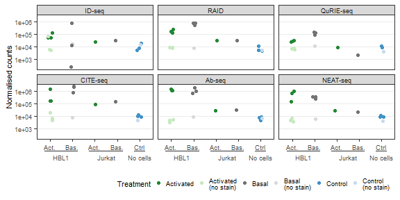
Differential expression analysis of the effect of staining conc on H2O2 vs PBS
DESeq2 analysis parameters:
HBL1 cells: 2 stimuli, 6 staining conc, 3 staining cell nr, 3 staining volumes
Compensated counts (>= 1)
Model design: staining_conc_text (ref: 0.5 ug/mL) + stimulus ( ref: PBS) + staining_conc_text:stimulus
# Select data
fig3B_data <- fig3_data_id_DS091 %>%
dplyr::filter(cell_line == "HBL1" & staining_cells == "0.25M" & staining_volume != "20 uL" & counts >= 1)
# Differential expression analysis
# Prepare data to load into DESeq dataset
# cts: dataframe with proteins as row names, wells as column names, and count data as cell values
# coldata: dataframe with wells as row names and all metadata as columns
cts <- fig3B_data %>%
dplyr::select(target_nospace, plate_well, counts) %>%
dplyr::filter(!is.na(counts)) %>%
spread(plate_well, counts) %>%
replace(is.na(.), 0) %>%
column_to_rownames("target_nospace")
cts <- as.matrix(as.data.frame(cts))
coldata <- data.frame(plate_well = colnames(cts)) %>%
left_join(fig3B_data[, c(1:16)]) %>%
distinct() %>%
mutate(staining_conc_text = factor(staining_conc_text, levels = c("0.5 ug/mL", "0.25 ug/mL", "0.125 ug/mL", "0.063 ug/mL", "0.031 ug/mL", "0 ug/mL")))
rownames(coldata) <- coldata$plate_well
# Create DESeq object
# First define how the model is designed. Place most important parameter last
modeldesign <- ~ staining_conc_text + stimulus + staining_conc_text:stimulus
# Then create the DESeq dataset
dds <- DESeqDataSetFromMatrix(countData = cts,
colData = coldata,
design = modeldesign)
# Define the reference samples for design parameter
# dds$staining_conc_text <- relevel(dds$staining_conc_text, ref = "0.5 ug/mL")
dds$stimulus <- relevel(dds$stimulus, ref = "PBS")
# Run DESeq2:
# This function performs a default analysis through the steps:
# Estimation of size factors: estimateSizeFactors
# Estimation of dispersion: estimateDispersions
# Negative Binomial GLM fitting and Wald statistics: nbinomWaldTest
dds <- DESeq(dds, test = "Wald", fitType = "local")
DESeq_comparisons <- resultsNames(dds) # lists the coefficients
# DESeq_comparisons
# Results
results_H2O2 <- results(dds, name = "stimulus_H2O2_vs_PBS", alpha = 0.05)
# summary(results_H2O2, padj = 0.05)
results_conc_0.25 <- results(dds, name = "staining_conc_text_0.25.ug.mL_vs_0.5.ug.mL", alpha = 0.05)
results_conc_0.125 <- results(dds, name = "staining_conc_text_0.125.ug.mL_vs_0.5.ug.mL", alpha = 0.05)
results_conc_0.063 <- results(dds, name = "staining_conc_text_0.063.ug.mL_vs_0.5.ug.mL", alpha = 0.05)
results_conc_0.031 <- results(dds, name = "staining_conc_text_0.031.ug.mL_vs_0.5.ug.mL", alpha = 0.05)
results_conc_0 <- results(dds, name = "staining_conc_text_0.ug.mL_vs_0.5.ug.mL", alpha = 0.05)
results_stim_0.25 <- results(dds, name = "staining_conc_text0.25.ug.mL.stimulusH2O2", alpha = 0.05)
results_stim_0.125 <- results(dds, name = "staining_conc_text0.125.ug.mL.stimulusH2O2", alpha = 0.05)
results_stim_0.063 <- results(dds, name = "staining_conc_text0.063.ug.mL.stimulusH2O2", alpha = 0.05)
results_stim_0.031 <- results(dds, name = "staining_conc_text0.031.ug.mL.stimulusH2O2", alpha = 0.05)
results_stim_0 <- results(dds, name = "staining_conc_text0.ug.mL.stimulusH2O2", alpha = 0.05)
list_results <- list(results_H2O2,
results_conc_0.25, results_conc_0.125, results_conc_0.063, results_conc_0.031, results_conc_0,
results_stim_0.25, results_stim_0.125, results_stim_0.063, results_stim_0.031, results_stim_0)
# Data transformation
# Regularized log transform
rld_HBL1 <- rlog(dds, blind = FALSE)
# Data wrangling
# Function to prepare DESeq2 results for volcano plots
# Standard log2FC filter = log2(1.5); standard padj filter = 0.05
prep_forvulcano <- function(dataset = dataset, padj_filter = 0.05, foldchange_filter = log2(1.5)){
dataset$proteins <- rownames(dataset)
dataset$target_nospace <- rownames(dataset)
# Add a column for differential expression
dataset$diff_express <- "NO"
dataset$diff_express[dataset$log2FoldChange > foldchange_filter & dataset$padj < padj_filter] <- "UP"
dataset$diff_express[dataset$log2FoldChange < -foldchange_filter & dataset$padj < padj_filter] <- "DOWN"
# Add a column for labeling
dataset$delabel <- NA
dataset$delabel[dataset$diff_express != "NO"] <- dataset$proteins[dataset$diff_express != "NO"]
# Add Ab metadata
# dataset <- left_join(as.data.frame(dataset), meta_Abs)
return(dataset)
}
# Apply function to each dataset
# Applied thresholds:
# padj < 0.05
# log2FC > log2(1.2)
names_volc <- c("volc_H2O2",
"volc_conc_0.25", "volc_conc_0.125", "volc_conc_0.063", "volc_conc_0.031", "volc_conc_0",
"volc_stim_0.25", "volc_stim_0.125", "volc_stim_0.063", "volc_stim_0.031", "volc_stim_0")
for(dataset in c(1:length(list_results))){
assign(names_volc[dataset], prep_forvulcano(dataset = list_results[[dataset]], foldchange_filter = log2(1.2)))
}
# Function to filter the data
# Standard log2FC filter = log2(1.5); standard padj filter = 0.05
filter_heatmap <- function(dataset = dataset, padj_filter = 0.05, foldchange_filter = log2(1.5), select_top = TRUE, select_n = 10) {
data <- as.data.frame(dataset) %>%
dplyr::filter(padj <= padj_filter & abs(log2FoldChange) >= foldchange_filter) %>%
arrange(-log2FoldChange)
rownames(data) <- data$target_nospace
# Select top 10 proteins with most increased and decreased expression
if (select_top == TRUE) {
data_top <- data %>%
slice_max(order_by = abs(log2FoldChange), n = select_n)
return(data_top)
} else {
return(data)
}
}
# Apply function to each dataset
list_results_volc <- list(volc_H2O2,
volc_conc_0.25, volc_conc_0.125, volc_conc_0.063, volc_conc_0.031, volc_conc_0,
volc_stim_0.25, volc_stim_0.125, volc_stim_0.063, volc_stim_0.031, volc_stim_0)
names_heat <- c("heat_H2O2",
"heat_conc_0.25", "heat_conc_0.125", "heat_conc_0.063", "heat_conc_0.031", "heat_conc_0",
"heat_stim_0.25", "heat_stim_0.125", "heat_stim_0.063", "heat_stim_0.031", "heat_stim_0")
for(dataset in c(1:length(list_results_volc))){
assign(names_heat[[dataset]], filter_heatmap(dataset = list_results_volc[[dataset]], select_top = FALSE, foldchange_filter = log2(1.2)))
dataset
}# Data
# Combine heatmap datasets (without DESeq2 analysis values)
heat_combi_HBL1 <- list(heat_H2O2#,
# heat_conc_0.25, heat_conc_0.125, heat_conc_0.063, heat_conc_0.031, heat_conc_0,
# heat_stim_0.25, heat_stim_0.125, heat_stim_0.063, heat_stim_0.031, heat_stim_0
) %>%
purrr::reduce(full_join) %>%
dplyr::select(-c(baseMean, log2FoldChange, lfcSE, stat, pvalue, padj, diff_express)) %>%
left_join(fig3_data_id_DS091[, 17:24]) %>%
# dplyr::filter(modification == "phospho") %>%
distinct()
# Subset the full dataframe to get metadata for heatmap plotting
fig3B_info_HBL1 <- fig3B_data %>%
dplyr::select(plate_well, staining_volume, staining_conc_text, stim_clean) %>%
distinct() %>%
# dplyr::filter(cell_line == "HBL1" &inhibitor == "iBTK" & inhib_conc %in% fig2_conc_all & !(stim_clean == "Basal" & inhib_conc %in% fig2_conc_all[2:5])) %>%
mutate(stim_clean = factor(stim_clean, levels = c("Basal", "Activated (H2O2)")),
staining_conc_text = factor(staining_conc_text, levels = c("0.5 ug/mL", "0.25 ug/mL", "0.125 ug/mL", "0.063 ug/mL", "0.031 ug/mL", "0 ug/mL")),
staining_conc_label = factor(str_replace(staining_conc_text, " ", "\n"), levels = c("0.5\nug/mL", "0.25\nug/mL", "0.125\nug/mL", "0.063\nug/mL", "0.031\nug/mL", "0\nug/mL"))) %>%
as.data.frame()
rownames(fig3B_info_HBL1) <- fig3B_info_HBL1$plate_well
fig3B_info_HBL1 <- dplyr::select(fig3B_info_HBL1, -c(plate_well))
# Get the rld transformed data for the heatmap and scale per row
fig3B_data_heat_HBL1 <- t(scale(t(assay(rld_HBL1)[c(heat_combi_HBL1$target_nospace), rownames(fig3B_info_HBL1)])))
# sort_hclust <- function(...) as.hclust(dendsort(as.dendrogram(...)))
# data_cluster_rows <- sort_hclust(hclust(dist(data_cell)))
# plot(data_cluster_rows, main = "Unsorted Dendrogram", xlab = "", sub = "")
# Figure
fig3B_ann_colors <- list(#Cells = colors_stain_cell,
"Staining volume" = colors_stain_volume,
"Panel conc." = colors_stain_conc,
Stimulus = colors_stim)
fig3B_heat_legend <- list(title = "Scaled\nexpression", title_gp = gpar(fontsize = 7), labels_gp = gpar(fontsize = 7),
grid_width = unit(2, "mm"), grid_height = unit(20, "mm"))
fig3B_col_ann <- HeatmapAnnotation(#Cells = fig3B_info_HBL1$staining_cells,
"Staining volume" = fig3B_info_HBL1$staining_volume,
"Panel conc." = fig3B_info_HBL1$staining_conc_text,
Stimulus = fig3B_info_HBL1$stim_clean,
simple_anno_size = unit(2.5, "mm"),
annotation_name_gp = gpar(fontsize = 7),
col = fig3B_ann_colors,
annotation_legend_param = list(#Cells = list(title = "Cells",
# title_gp = gpar(fontsize = 6),
# labels_gp = gpar(fontsize = 6),
# grid_width = unit(2, "mm"),
# grid_height = unit(1, "mm")),
"Staining volume" = list(title = "Staining\nvolume",
title_gp = gpar(fontsize = 7),
labels_gp = gpar(fontsize = 7),
grid_width = unit(2.5, "mm"),
grid_height = unit(1, "mm")),
"Panel conc." = list(title = "Panel\nconcentration",
title_gp = gpar(fontsize = 7),
labels_gp = gpar(fontsize = 7),
grid_width = unit(2.5, "mm"),
grid_height = unit(1, "mm")),
Stimulus = list(title = "Stimulus",
title_gp = gpar(fontsize = 7),
labels_gp = gpar(fontsize = 7),
grid_width = unit(2.5, "mm"),
grid_height = unit(1, "mm"))),
show_legend = c(TRUE, TRUE, TRUE))
fig3_panelB <- ggplotify::as.ggplot(ComplexHeatmap::pheatmap(
fig3B_data_heat_HBL1,
scale = "none",
cluster_rows = TRUE,
# treeheight_row = 20,
show_rownames = TRUE,
show_colnames = FALSE,
cluster_cols = FALSE,
top_annotation = fig3B_col_ann,
annotation_colors = fig3B_ann_colors,
colorRampPalette(c("navy", "white", "firebrick3"))(50),
column_split = fig3B_info_HBL1$staining_conc_label,
row_split = heat_combi_HBL1$modification,
row_gap = unit(1, "mm"),
# cellwidth = 10,
# cellheight = 10,
fontsize = 5.5,
row_title_gp = gpar(fontsize = 8),
column_title_gp = gpar(fontsize = 7),
annotation_names_col = gpar(fontsize = 7),
border_color = NA,
heatmap_legend_param = fig3B_heat_legend,
# annotation_legend = FALSE,
# main = " ",
)) +
# ggtitle(" Signaling activation in HBL1 under different staining conditions") +
textsize_medium
fig3_panelB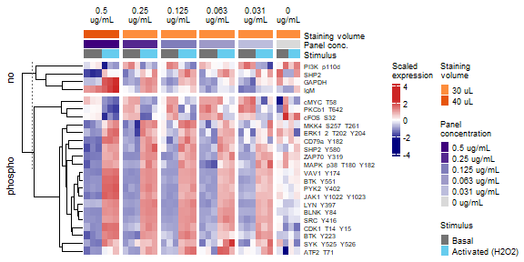
# Placeholder
fig3_panelC <- ggplot() +
geom_blank() +
scale_x_continuous(limits = c(0, 10)) +
scale_y_continuous(limits = c(0, 10)) +
# labs(title = "BCR signaling network") +
theme_bw() +
theme(axis.text = element_text(color = "white"),
axis.ticks = element_blank(),
panel.grid = element_blank()) +
textsize_small
# fig3_panelC
# PNG
png_fig3_panelC <- image_read("output/figures/non_R_figs/BioAnalyzer_DS027_original_2.png") %>%
image_ggplot(interpolate = TRUE)
png_fig3_panelC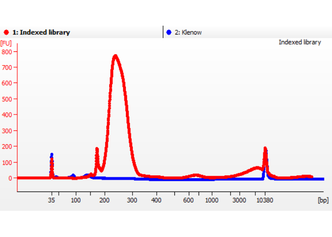
# Placeholder
fig3_panelD <- ggplot() +
geom_blank() +
scale_x_continuous(limits = c(0, 10)) +
scale_y_continuous(limits = c(0, 10)) +
# labs(title = "BCR signaling network") +
theme_bw() +
theme(axis.text = element_text(color = "white"),
axis.ticks = element_blank(),
panel.grid = element_blank()) +
textsize_small
# fig3_panelD
# PNG
png_fig3_panelD <- image_read("output/figures/non_R_figs/BioAnalyzer_BB014_input_table.png") %>%
image_ggplot(interpolate = TRUE)
png_fig3_panelD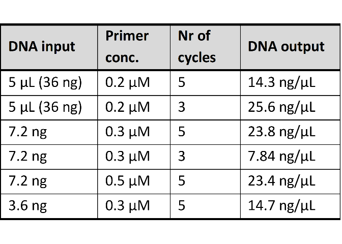
fig3D_data <- tibble("Sample" = c(1, 2, 3, 4, 5, 6),
"DNA input" = c("5 uL (36 ng)", "5 uL (36 ng)", "7.2 ng", "7.2 ng", "7.2 ng", "3.6 ng"),
"Primer conc." = c("0.2 uM", "0.2 uM", "0.3 uM", "0.3 uM", "0.5 uM", "0.3 uM"),
"Nr of cycles" = c(5, 3, 5, 3, 5, 5),
"DNA output" = c("14.3 ng/uL", "25.6 ng/uL", "23.8 ng/uL", "7.84 ng/uL", "23.4 ng/uL", "14.7 ng/uL"))
# fig3D_data# Placeholder
fig3_panelE <- ggplot() +
geom_blank() +
scale_x_continuous(limits = c(0, 10)) +
scale_y_continuous(limits = c(0, 10)) +
# labs(title = "BCR signaling network") +
theme_bw() +
theme(axis.text = element_text(color = "white"),
axis.ticks = element_blank(),
panel.grid = element_blank()) +
textsize_small
# fig3_panelE
# PNG
png_fig3_panelE <- image_read("output/figures/non_R_figs/BioAnalyzer_BB014_indexPCR_2.png") %>%
image_ggplot(interpolate = TRUE)
png_fig3_panelE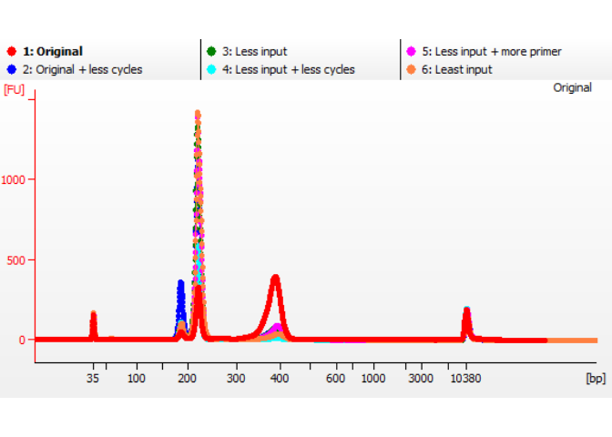
# Placeholder
fig3_panelF <- ggplot() +
geom_blank() +
scale_x_continuous(limits = c(0, 10)) +
scale_y_continuous(limits = c(0, 10)) +
# labs(title = "BCR signaling network") +
theme_bw() +
theme(axis.text = element_text(color = "white"),
axis.ticks = element_blank(),
panel.grid = element_blank()) +
textsize_small
# fig3_panelF
# PNG
png_fig3_panelF <- image_read("output/figures/non_R_figs/BioAnalyzer_DS091_adapted_2.png") %>%
image_ggplot(interpolate = TRUE)
png_fig3_panelF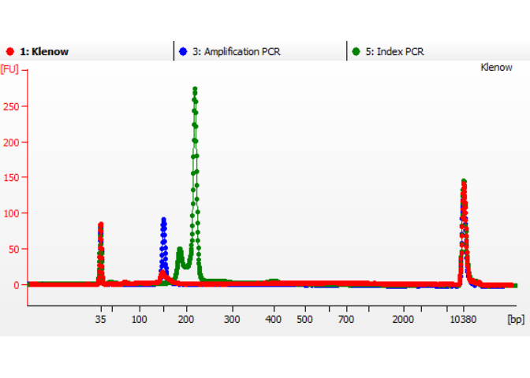
# Combine all panels of the figure
fig3_DE <- plot_grid(png_fig3_panelD, png_fig3_panelE, labels = PANEL_labels[c(4, 5)], ncol = 2, rel_widths = c(1, 1), label_size = 10)
fig3_CF <- plot_grid(png_fig3_panelC, png_fig3_panelF, labels = PANEL_labels[c(3, 6)], ncol = 2, rel_widths = c(1, 1), label_size = 10)
# fig3_CDEF <- plot_grid(png_fig3_panelC, png_fig3_panelD, png_fig3_panelE, fig3_panelF, labels = PANEL_labels[c(3:6)], ncol = 2, rel_widths = c(1, 1), rel_heights = c(1, 1), label_size = 10, scale = 0.9)
fig3_big <- plot_grid(fig3_panelA, fig3_panelB, fig3_CF, fig3_DE, labels = c(PANEL_labels[c(1:2)]), ncol = 1, rel_heights = c(2, 2, 1, 1), label_size = 10)
fig3_big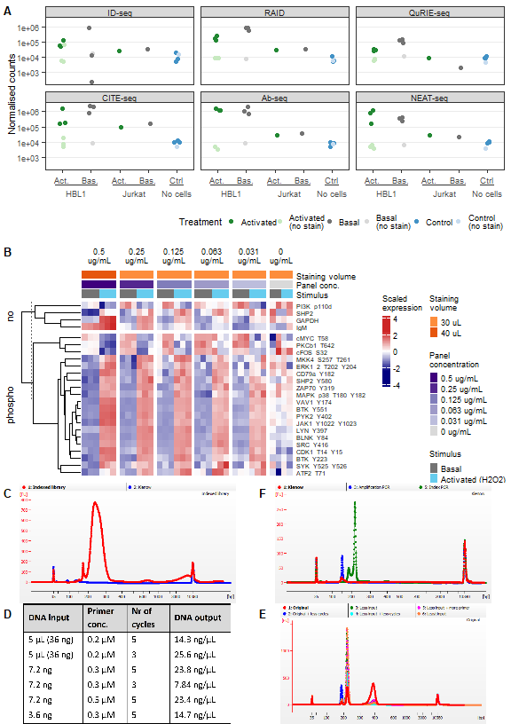
# Save figure as pdf, jpg, and png
# ggsave(
# fig3_big,
# filename = "output/figures/main_fig3_big.pdf",
# width = 6,
# height = 8.5,
# units = "in",
# dpi = 300
# )
ggsave(
fig3_big,
filename = "output/figures/main_fig3_big.jpg",
width = 6,
height = 8.5,
units = "in",
dpi = 300
)# Combine all panels of the figure
fig3 <- plot_grid(fig3_panelA, fig3_panelB, labels = c(PANEL_labels[c(1:2)]), ncol = 1, rel_heights = c(1, 1), label_size = 10)
fig3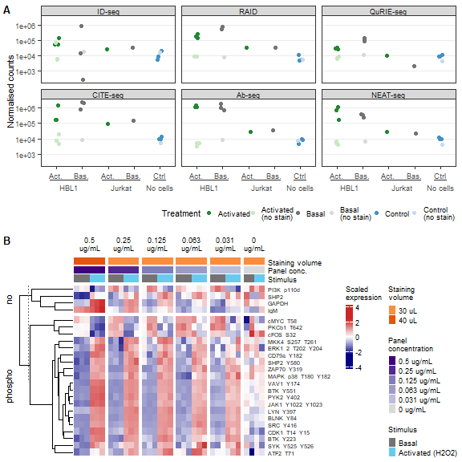
# Save figure as pdf, jpg, and png
ggsave(
fig3,
filename = "output/figures/main_fig3.pdf",
width = 6,
height = 6,
units = "in",
dpi = 300
)
ggsave(
fig3,
filename = "output/figures/main_fig3.jpg",
width = 6,
height = 6,
units = "in",
dpi = 300
)Figure 3: Adjustments in the immunostaining section of the experimental protocol improved the quality of the ID-seq data while maintaining efficient reagent use.
# Remove unnecessary files to clear up memory
rm(list = ls(pattern = "fig3"))
rm(list = ls(pattern = "png"))
rm(list = ls(pattern = "results_"))
rm(list = ls(pattern = "volc_"))
rm(list = ls(pattern = "list_"))
rm(list = ls(pattern = "names_"))
rm(list = ls(pattern = "titles_"))
rm(list = ls(pattern = "data_"))
rm(list = ls(pattern = "heat_"))
rm(list = ls(pattern = "rld"))
rm(list = ls(pattern = "pca"))
gc() used (Mb) gc trigger (Mb) max used (Mb)
Ncells 11091323 592.4 17081285 912.3 17081285 912.3
Vcells 19447081 148.4 84607111 645.6 130989777 999.4Adjustments in the library preparation section of the experimental protocol greatly improved the quality of the sequencing library.
Input:
DS027 BioAnalyzer data
BB014 BioAnalyzer data
DS091 BioAnalyzer data
# Placeholder
fig4_panelA <- ggplot() +
geom_blank() +
scale_x_continuous(limits = c(0, 10)) +
scale_y_continuous(limits = c(0, 10)) +
# labs(title = "BCR signaling network") +
theme_bw() +
theme(axis.text = element_text(color = "white"),
axis.ticks = element_blank(),
panel.grid = element_blank()) +
textsize_small
# fig4_panelA
# PNG
png_fig4_panelA <- image_read("output/figures/non_R_figs/BioAnalyzer_DS027_original_2.png") %>%
image_ggplot(interpolate = TRUE) +
ggtitle(" Initial library preparation") +
textsize_small
png_fig4_panelA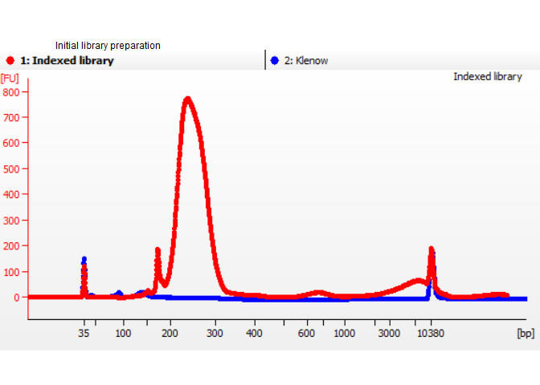
# Placeholder
fig4_panelB <- ggplot() +
geom_blank() +
scale_x_continuous(limits = c(0, 10)) +
scale_y_continuous(limits = c(0, 10)) +
# labs(title = "BCR signaling network") +
theme_bw() +
theme(axis.text = element_text(color = "white"),
axis.ticks = element_blank(),
panel.grid = element_blank()) +
textsize_small
# fig4_panelB
# PNG
png_fig4_panelB <- image_read("output/figures/non_R_figs/BioAnalyzer_BB014_input_table.png") %>%
image_ggplot(interpolate = TRUE)
png_fig4_panelBfig4B_data <- tibble("Sample" = c(1, 2, 3, 4, 5, 6),
"DNA input" = c("5 uL (36 ng)", "5 uL (36 ng)", "7.2 ng", "7.2 ng", "7.2 ng", "3.6 ng"),
"Primer conc." = c("0.2 uM", "0.2 uM", "0.3 uM", "0.3 uM", "0.5 uM", "0.3 uM"),
"Nr of cycles" = c(5, 3, 5, 3, 5, 5),
"DNA output" = c("14.3 ng/uL", "25.6 ng/uL", "23.8 ng/uL", "7.84 ng/uL", "23.4 ng/uL", "14.7 ng/uL"))
# fig4B_data# Placeholder
fig4_panelC <- ggplot() +
geom_blank() +
scale_x_continuous(limits = c(0, 10)) +
scale_y_continuous(limits = c(0, 10)) +
# labs(title = "BCR signaling network") +
theme_bw() +
theme(axis.text = element_text(color = "white"),
axis.ticks = element_blank(),
panel.grid = element_blank()) +
textsize_small
# fig4_panelC
# PNG
png_fig4_panelC <- image_read("output/figures/non_R_figs/BioAnalyzer_BB014_indexPCR_2.png") %>%
image_ggplot(interpolate = TRUE) +
ggtitle(" Index PCR optimisation") +
textsize_small
png_fig4_panelC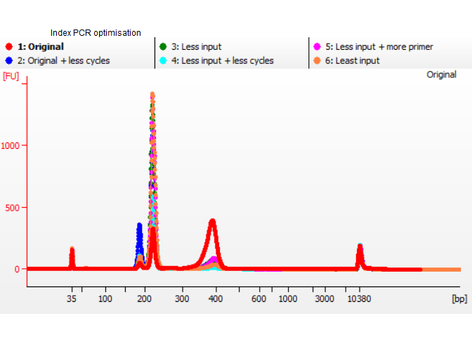
# Placeholder
fig4_panelD <- ggplot() +
geom_blank() +
scale_x_continuous(limits = c(0, 10)) +
scale_y_continuous(limits = c(0, 10)) +
# labs(title = "BCR signaling network") +
theme_bw() +
theme(axis.text = element_text(color = "white"),
axis.ticks = element_blank(),
panel.grid = element_blank()) +
textsize_small
# fig4_panelD
# PNG
png_fig4_panelD <- image_read("output/figures/non_R_figs/BioAnalyzer_DS091_adapted_2.png") %>%
image_ggplot(interpolate = TRUE) +
ggtitle(" Adapted library preparation") +
textsize_small
png_fig4_panelD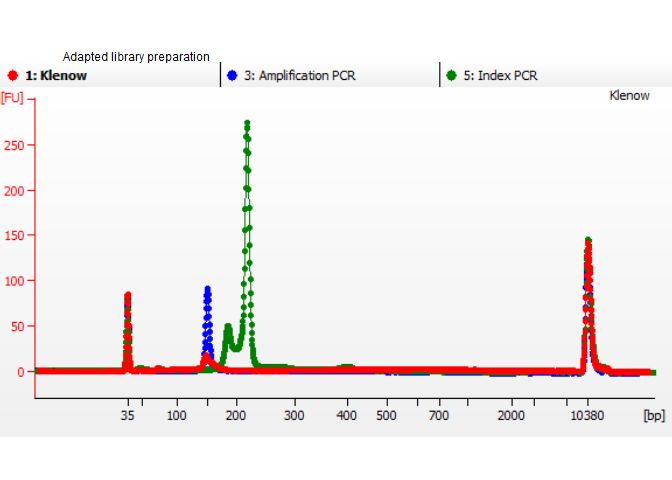
# Combine all panels of the figure
fig4 <- plot_grid(png_fig4_panelA, png_fig4_panelB, png_fig4_panelD, png_fig4_panelC, labels = c(PANEL_labels[c(1, 2, 4, 3)]), ncol = 2, rel_widths = c(1, 1), rel_heights = c(1, 1), label_size = 10, align = "h")
fig4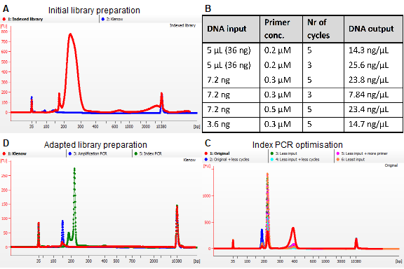
# Save figure as pdf, jpg, and png
ggsave(
fig4,
filename = "output/figures/main_fig4.pdf",
width = 6,
height = 4,
units = "in",
dpi = 300
)
ggsave(
fig4,
filename = "output/figures/main_fig4.jpg",
width = 6,
height = 4,
units = "in",
dpi = 300
)Figure 4: Adjustments in the library preparation section of the experimental protocol greatly improved the quality of the sequencing library.
# Remove unnecessary files to clear up memory
rm(list = ls(pattern = "fig4"))
rm(list = ls(pattern = "png"))
rm(list = ls(pattern = "results_"))
rm(list = ls(pattern = "volc_"))
rm(list = ls(pattern = "list_"))
rm(list = ls(pattern = "names_"))
rm(list = ls(pattern = "titles_"))
rm(list = ls(pattern = "data_"))
rm(list = ls(pattern = "heat_"))
rm(list = ls(pattern = "rld"))
rm(list = ls(pattern = "pca"))
gc() used (Mb) gc trigger (Mb) max used (Mb)
Ncells 11075118 591.5 17081285 912.3 17081285 912.3
Vcells 22307328 170.2 67685689 516.5 130989777 999.4ID-seq reveals network-wide phosphorylation events upon activation of the B-cell signaling network.
Input: - BioRender schematic figures
DS091 ID-seq data
DESeq2 analysis
PCA
# ID-seq data DS091 (counts per well/sample and mean per condition)
fig5_data_id <- read_csv("output/DS091_ImmunostainingBio/IDseq_ann/bio_IDseq_data_sample.csv")
fig5_mean_id <- read_csv("output/DS091_ImmunostainingBio/IDseq_ann/bio_IDseq_data_condition.csv")
# File for network projection info
fig5_node_info <- read_excel("output/network_visual/node_info2.xlsx")fig5_cells <- c("DAUDI", "HBL1")
fig5_stim <- c("Basal", "Activated (anti-Ig)", "Activated (H2O2)")
fig5_stim_label <- c("Basal", "Activated\n(anti-Ig)", "Activated\n(H2O2)")
fig5_cell_stim <- c("DAUDI - Basal", "DAUDI - Activated (anti-Ig)", "HBL1 - Basal", "HBL1 - Activated (H2O2)")
fig5_cell_stim_label <- c("Burkitt's bas.", "Burkitt's act.\n(anti-Ig)", "DLBCL bas.", "DLBCL act.\n(H2O2)")
fig5_meta_cols <- c("plate_well", "plate", "well", "experiment", "cell_line", "stimulus", "stim_clean", "replicate", "description_sample", "description_sample_rep", "description_staining")Differential expression analysis of stimulation in DAUDI cells (separately)
DESeq2 analysis parameters:
DAUDI anti-Ig + PBS
Compensated counts (>= 1)
Model design: stimulus (ref: PBS)
# Differential expression analysis
# Prepare data to load into DESeq dataset
# cts: dataframe with proteins as row names, wells as column names, and count data as cell values
# coldata: dataframe with wells as row names and all metadata as columns
cts <- fig5_data_id %>%
dplyr::filter(cell_line == "DAUDI" & counts >= 1) %>%
dplyr::select(target_nospace, plate_well, counts) %>%
dplyr::filter(!is.na(counts)) %>%
spread(plate_well, counts) %>%
replace(is.na(.), 0) %>%
column_to_rownames("target_nospace")
cts <- as.matrix(as.data.frame(cts))
coldata <- data.frame(plate_well = colnames(cts)) %>%
left_join(fig5_data_id[1:16]) %>%
distinct()
rownames(coldata) <- coldata$plate_well
# Create DESeq object
# First define how the model is designed. Place most important parameter last
modeldesign <- ~ stimulus
# Then create the DESeq dataset
dds <- DESeqDataSetFromMatrix(countData = cts,
colData = coldata,
design = modeldesign)
# Define the reference samples for design parameter
dds$stimulus <- relevel(dds$stimulus, ref = "PBS")
# Run DESeq2:
# This function performs a default analysis through the steps:
# Estimation of size factors: estimateSizeFactors
# Estimation of dispersion: estimateDispersions
# Negative Binomial GLM fitting and Wald statistics: nbinomWaldTest
dds <- DESeq(dds, test = "Wald", fitType = "local")
DESeq_comparisons <- resultsNames(dds) # lists the coefficients
# DESeq_comparisons
# Results
results_DAUDI <- results(dds, name = "stimulus_anti.Ig_vs_PBS", alpha = 0.05)
# summary(results_HBL1, padj = 0.05)
# Data transformation
# Regularized log transform
rld <- rlog(dds, blind = FALSE)
# Volcano preparation/data wrangling
# Function to prepare DESeq2 results for volcano plots
# Standard log2FC filter = log2(1.5); standard padj filter = 0.05
prep_forvulcano <- function(dataset = dataset, padj_filter = 0.05, foldchange_filter = log2(1.5)){
dataset$proteins <- rownames(dataset)
dataset$target_nospace <- rownames(dataset)
# Add a column for differential expression
dataset$diff_express <- "NO"
dataset$diff_express[dataset$log2FoldChange > foldchange_filter & dataset$padj < padj_filter] <- "UP"
dataset$diff_express[dataset$log2FoldChange < -foldchange_filter & dataset$padj < padj_filter] <- "DOWN"
# Add a column for labeling
dataset$delabel <- NA
dataset$delabel[dataset$diff_express != "NO"] <- dataset$proteins[dataset$diff_express != "NO"]
# Add Ab metadata
# dataset <- left_join(as.data.frame(dataset), meta_Abs)
return(as.data.frame(dataset))
}
# Apply function to each dataset
# Applied thresholds:
# padj < 0.05
volc_DAUDI <- prep_forvulcano(dataset = results_DAUDI, foldchange_filter = 0, padj_filter = 0.05) %>%
subset(diff_express == "UP" | diff_express == "DOWN") %>%
mutate(log10padj = -log10(padj)) %>%
dplyr::select(c(target_nospace, log2FoldChange, padj, log10padj, diff_express)) %>%
full_join(fig5_node_info) %>%
mutate(log2FoldChange = case_when(in_panel == "yes" & is.na(log2FoldChange) ~ 0,
.default = log2FoldChange),
padj = case_when(in_panel == "yes" & is.na(padj) ~ 0.051,
.default = padj)) %>%
subset(in_network == "yes" & in_panel == "yes") %>%
dplyr::rename(ch3_aIgvsPBS_DAUDI_log2FC = log2FoldChange,
ch3_aIgvsPBS_DAUDI_padj = padj,
ch3_aIgvsPBS_DAUDI_log10padj = log10padj,
ch3_aIgvsPBS_DAUDI_DE = diff_express)
write.csv(volc_DAUDI, file = "output/network_visual/node_info_DAUDI_aIgvsPBS.csv", row.names = F, na = "")Differential expression analysis of stimulation in HBL1 cells (separately)
DESeq2 analysis parameters:
HBL1 H2O2 + PBS samples
Compensated counts (>= 1)
Model design: stimulus (ref: PBS)
# Differential expression analysis
# Prepare data to load into DESeq dataset
# cts: dataframe with proteins as row names, wells as column names, and count data as cell values
# coldata: dataframe with wells as row names and all metadata as columns
cts <- fig5_data_id %>%
dplyr::filter(cell_line == "HBL1" & counts >= 1) %>%
dplyr::select(target_nospace, plate_well, counts) %>%
dplyr::filter(!is.na(counts)) %>%
spread(plate_well, counts) %>%
replace(is.na(.), 0) %>%
column_to_rownames("target_nospace")
cts <- as.matrix(as.data.frame(cts))
coldata <- data.frame(plate_well = colnames(cts)) %>%
left_join(fig5_data_id[1:16]) %>%
distinct()
rownames(coldata) <- coldata$plate_well
# Create DESeq object
# First define how the model is designed. Place most important parameter last
modeldesign <- ~ stimulus
# Then create the DESeq dataset
dds <- DESeqDataSetFromMatrix(countData = cts,
colData = coldata,
design = modeldesign)
# Define the reference samples for design parameter
dds$stimulus <- relevel(dds$stimulus, ref = "PBS")
# Run DESeq2:
# This function performs a default analysis through the steps:
# Estimation of size factors: estimateSizeFactors
# Estimation of dispersion: estimateDispersions
# Negative Binomial GLM fitting and Wald statistics: nbinomWaldTest
dds <- DESeq(dds, test = "Wald", fitType = "local")
DESeq_comparisons <- resultsNames(dds) # lists the coefficients
# DESeq_comparisons
# Results
results_HBL1 <- results(dds, name = "stimulus_H2O2_vs_PBS", alpha = 0.05)
# summary(results_HBL1, padj = 0.05)
# Data transformation
# Regularized log transform
rld <- rlog(dds, blind = FALSE)
# Volcano preparation/data wrangling
# Function to prepare DESeq2 results for volcano plots
# Standard log2FC filter = log2(1.5); standard padj filter = 0.05
prep_forvulcano <- function(dataset = dataset, padj_filter = 0.05, foldchange_filter = log2(1.5)){
dataset$proteins <- rownames(dataset)
dataset$target_nospace <- rownames(dataset)
# Add a column for differential expression
dataset$diff_express <- "NO"
dataset$diff_express[dataset$log2FoldChange > foldchange_filter & dataset$padj < padj_filter] <- "UP"
dataset$diff_express[dataset$log2FoldChange < -foldchange_filter & dataset$padj < padj_filter] <- "DOWN"
# Add a column for labeling
dataset$delabel <- NA
dataset$delabel[dataset$diff_express != "NO"] <- dataset$proteins[dataset$diff_express != "NO"]
# Add Ab metadata
# dataset <- left_join(as.data.frame(dataset), meta_Abs)
return(as.data.frame(dataset))
}
# Apply function to each dataset
# Applied thresholds:
# padj < 0.05
volc_HBL1 <- prep_forvulcano(dataset = results_HBL1, foldchange_filter = 0, padj_filter = 0.05) %>%
subset(diff_express == "UP" | diff_express == "DOWN") %>%
mutate(log10padj = -log10(padj)) %>%
dplyr::select(c(target_nospace, log2FoldChange, padj, log10padj, diff_express)) %>%
full_join(fig5_node_info) %>%
mutate(log2FoldChange = case_when(in_panel == "yes" & is.na(log2FoldChange) ~ 0,
.default = log2FoldChange),
padj = case_when(in_panel == "yes" & is.na(padj) ~ 0.051,
.default = padj)) %>%
subset(in_network == "yes" & in_panel == "yes") %>%
dplyr::rename(ch3_H2O2vsPBS_HBL1_log2FC = log2FoldChange,
ch3_H2O2vsPBS_HBL1_padj = padj,
ch3_H2O2vsPBS_HBL1_log10padj = log10padj,
ch3_H2O2vsPBS_HBL1_DE = diff_express)
write.csv(volc_HBL1, file = "output/network_visual/node_info_HBL1_H2O2vsPBS_PBSctrl.csv", row.names = F, na = "")fig5_DESeq2_node_info <- list(volc_DAUDI, volc_HBL1) %>%
purrr::reduce(full_join)
write.csv(fig5_DESeq2_node_info, file = "output/network_visual/node_info_ch3_fig5_all.csv", row.names = F, na = "")# Placeholder
fig5_panelA <- ggplot() +
geom_blank() +
scale_x_continuous(limits = c(0, 10)) +
scale_y_continuous(limits = c(0, 10)) +
# labs(title = "BCR signaling network") +
theme_bw() +
theme(axis.text = element_text(color = "white"),
axis.ticks = element_blank(),
panel.grid = element_blank()) +
textsize_small
# fig5_panelA
# PNG
# DAUDI anti-Ig vs PBS (DS091)
png_fig5_panelA <- magick::image_read("output/figures/non_R_figs/CytoScape_DAUDI_aIgvsPBS_Panel0125.png") %>%
magick::image_border(color = "black", geometry = "1x1") %>%
magick::image_ggplot(interpolate = TRUE) +
ggtitle(" Burkitt's model (DAUDI)\n anti-Ig vs PBS") +
# theme(axis.title = element_text(colour = "white"), axis.text = element_blank()) +
textsize_small
png_fig5_panelA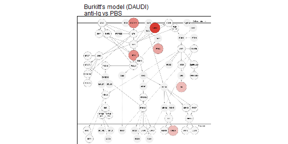
# legend
png_fig5_legend <- magick::image_read("output/figures/non_R_figs/CytoScape_legend.png") %>%
# magick::image_border(color = "black", geometry = "1x1") %>%
magick::image_ggplot(interpolate = TRUE) +
# ggtitle("\n") +
textsize_small
# png_fig5_legend# Select data
# fig5B_prot <- sort(unique(heat_DAUDI_select$target_nospace))
# From panel B: "BTK_Y551", "CD79a_Y182", "CREB_S133", "PYK2_Y402", "S6_S235_S236", "S6_S240_S244", "VAV1_Y174"
fig5B_prot <- c("BTK_Y551", "CREB_S133", "PYK2_Y402", "S6_S240_S244", "VAV1_Y174")
fig5B_prot_label <- c("BTK\n(Y551)", "CREB\n(S133)", "PYK2\n(Y402)", "S6\n(S240/S244)", "VAV1\n(Y174)")
fig5B_data <- fig5_data_id %>%
dplyr::filter(cell_line == "DAUDI") %>%
subset(target_nospace %in% fig5B_prot)
fig5B_mean <- fig5_mean_id %>%
dplyr::filter(cell_line == "DAUDI") %>%
subset(target_nospace %in% fig5B_prot)
# Figure
fig5_panelB <- ggplot() +
geom_jitter(data = fig5B_data,
aes(x = factor(target_nospace, levels = fig5B_prot, labels = fig5B_prot_label),
y = counts_norm,
color = factor(stim_clean, levels = fig5_stim)),
alpha = 1, size = 1, width = 0.1) +
geom_errorbar(data = fig5B_mean,
aes(x = factor(target_nospace, levels = fig5B_prot, labels = fig5B_prot_label),
ymin = counts_norm, ymax = counts_norm,
group = factor(stim_clean, levels = fig5_stim),
color = factor(stim_clean, levels = fig5_stim)),
width = 0.35, size = 0.75) +
# facet_wrap(vars(factor(target, label = "pCD79a (Y182)")), nrow = 1) +
scale_color_manual(values = colors_stim, breaks = fig5_stim, labels = fig5_stim_label, name = "Treatment") +
labs(x = element_blank(), y = "Normalised\ncounts") +
theme_bw() +
RotatedAxis() +
theme(panel.grid.minor.y = element_blank(), panel.grid.major.x = element_blank(), legend.key.size = unit(0.5, "cm"), legend.spacing.y = unit(0.2, "cm"), legend.box.spacing = unit(0.05, "cm"), legend.position = "right", legend.justification = "left", axis.text.x = element_text(angle = 45, hjust = 0.5, vjust = 0.75)) +
textsize_small
fig5_panelB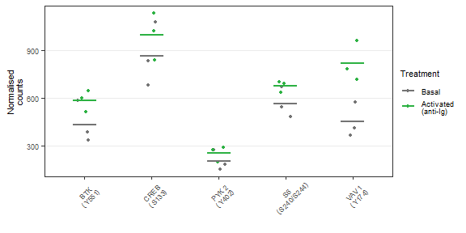
# Placeholder
fig5_panelC <- ggplot() +
geom_blank() +
scale_x_continuous(limits = c(0, 10)) +
scale_y_continuous(limits = c(0, 10)) +
# labs(title = "BCR signaling network") +
theme_bw() +
theme(axis.text = element_text(color = "white"),
axis.ticks = element_blank(),
panel.grid = element_blank()) +
textsize_small
# fig5_panelC
# PNG
# HBL1 H2O2 vs PBS (DS091)
png_fig5_panelC <- magick::image_read("output/figures/non_R_figs/CytoScape_HBL1_H2O2vsPBS_Panel0125.png") %>%
magick::image_border(color = "black", geometry = "1x1") %>%
magick::image_ggplot(interpolate = TRUE) +
ggtitle(" DLBCL model (HBL1)\n H2O2 vs PBS") +
# theme(axis.title = element_text(colour = "white"), axis.text = element_blank()) +
textsize_small
png_fig5_panelC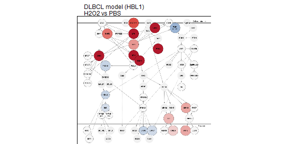
# Select data
# fig5D_prot <- sort(unique(heat_HBL1_select$target_nospace))
# From panel D: "ATF2_T71", "BLNK_Y84", "BTK", "BTK_Y223", "BTK_Y551", "CD79a_Y182", "CDK1_T14_Y15", "GAPDH", "JAK1_Y1022_Y1023", "LYN_Y397", "MKK4_S257_T261", "PI3K_p110d", "PYK2_Y402", "SHP2_Y580", "SRC_Y416", "SYK_Y525_Y526", "VAV1_Y174", "ZAP70_Y319"
# From panel B: "BTK_Y551", "CD79a_Y182", "CREB_S133", "PYK2_Y402", "S6_S235_S236", "S6_S240_S244", "VAV1_Y174"
# fig5D_prot <- c("BTK_Y551", "CREB_S133", "PYK2_Y402", "S6_S240_S244", "VAV1_Y174")
fig5D_prot <- c("BLNK_Y84", "BTK_Y223", "LYN_Y397", "SHP2_Y580", "SYK_Y525_Y526")
fig5D_prot_label <- c("BLNK\n(Y84)", "BTK\n(Y223)", "LYN\n(Y397)", "SHP2\n(Y580)", "SYK\n(Y525/Y526)")
fig5D_data <- fig5_data_id %>%
dplyr::filter(cell_line == "HBL1") %>%
subset(target_nospace %in% fig5D_prot)
fig5D_mean <- fig5_mean_id %>%
dplyr::filter(cell_line == "HBL1") %>%
subset(target_nospace %in% fig5D_prot)
# Figure
fig5_panelD <- ggplot() +
geom_jitter(data = fig5D_data,
aes(x = factor(target_nospace, levels = fig5D_prot, labels = fig5D_prot_label),
y = counts_norm,
color = factor(stim_clean, levels = fig5_stim)),
alpha = 1, size = 1, width = 0.1) +
geom_errorbar(data = fig5D_mean,
aes(x = factor(target_nospace, levels = fig5D_prot, labels = fig5D_prot_label),
ymin = counts_norm, ymax = counts_norm,
group = factor(stim_clean, levels = fig5_stim),
color = factor(stim_clean, levels = fig5_stim)),
width = 0.35, size = 0.75) +
# facet_wrap(vars(factor(target, label = "pCD79a (Y182)")), nrow = 1) +
scale_color_manual(values = colors_stim, breaks = fig5_stim, labels = fig5_stim_label, name = "Treatment") +
labs(x = element_blank(), y = "Normalised\ncounts") +
theme_bw() +
RotatedAxis() +
theme(panel.grid.minor.y = element_blank(), panel.grid.major.x = element_blank(), legend.key.size = unit(0.5, "cm"), legend.spacing.y = unit(0.2, "cm"), legend.box.spacing = unit(0.05, "cm"), legend.position = "right", legend.justification = "left", axis.text.x = element_text(angle = 45, hjust = 0.5, vjust = 0.75)) +
textsize_small
fig5_panelD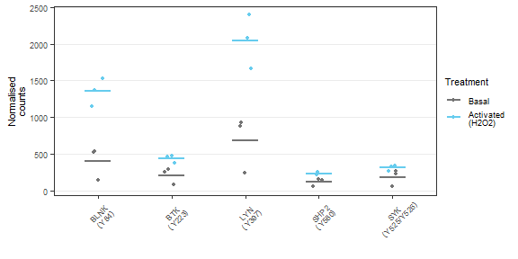
# Prepare data for FactoMineR package
# cts_pca: dataframe with wells as row names, proteins as column names, and count data as cell values
# coldata: dataframe with wells as row names and all metadata as columns
cts_pca <- fig5_data_id %>%
dplyr::filter(counts_norm >= 1) %>%
dplyr::select(target_nospace, plate_well, counts_norm) %>%
dplyr::filter(!is.na(counts_norm)) %>%
spread(target_nospace, counts_norm) %>%
replace(is.na(.), 0) %>%
column_to_rownames("plate_well")
# cts_pca <- scale(cts_pca)
coldata <- data.frame(plate_well = rownames(cts_pca)) %>%
left_join(distinct(dplyr::select(fig5_data_id, all_of(fig5_meta_cols)))) %>%
mutate(stimulus = factor(stim_clean, levels = fig5_stim),
cell_line = factor(cell_line, levels = fig5_cells)) #If necessary, make factors of some metadata columns
rownames(coldata) <- coldata$plate_well
# Results
pca_results <- PCA(cts_pca, scale.unit = FALSE, ncp = 5, graph = FALSE)
pca_expl_var <- as.data.frame(get_eigenvalue(pca_results)) %>% # Percentage variance explained by each PC
rownames_to_column("PC") %>%
pull(var = variance.percent, name = PC) %>%
round(digits = 1)
pca_variab <- get_pca_var(pca_results) # Results focused on variables (proteins)
pca_indiv <- get_pca_ind(pca_results) # Results focused on individuals (wells)
pca_data <- as.data.frame(pca_indiv$coord[, 1:3]) %>%
rownames_to_column("plate_well") %>%
dplyr::rename(PC1 = Dim.1, PC2 = Dim.2, PC3 = Dim.3) %>%
left_join(coldata)# Select data
fig5E_select_colors <- c("DAUDI - Basal" = "#737373", "DAUDI - Activated (anti-Ig)" = "#2cb142",
"HBL1 - Basal" = "#737373", "HBL1 - Activated (H2O2)" = "#66CCEE")
fig5E_select_shape <- c("DAUDI - Basal" = 16, "DAUDI - Activated (anti-Ig)" = 16,
"HBL1 - Basal" = 17, "HBL1 - Activated (H2O2)" = 17)
# Figure
fig5_panelE <- ggplot(pca_data) +
geom_point(aes(x = PC1, y = PC2, shape = description_sample, color = description_sample), size = 2.5, alpha = 0.9) +
scale_color_manual(values = fig5E_select_colors, breaks = fig5_cell_stim, label = fig5_cell_stim_label, name = "Treatment") +
scale_shape_manual(values = fig5E_select_shape, breaks = fig5_cell_stim, label = fig5_cell_stim_label, name = "Treatment") +
xlab(paste0("PC1: ", pca_expl_var[1], "% variance")) +
ylab(paste0("PC2: ", pca_expl_var[2], "% variance")) +
theme_bw() +
theme(panel.grid.minor = element_blank(), legend.key.size = unit(0.35, "cm"), legend.spacing.y = unit(0.5, "cm"), legend.box.spacing = unit(0.01, "cm"), legend.position = "right", legend.justification = "left") +
textsize_small
fig5_panelE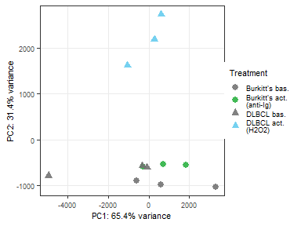
# PC1-3
fig5E_PC12 <- ggplot(pca_data) +
geom_point(aes(x = PC1, y = PC2, shape = cell_line, color = stim_clean), size = 2.5) +
# scale_color_manual(values = select_colors, breaks = names(select_colors), name = "Inhibitor") +
# scale_shape_manual(values = c(16, 17), labels = c("Basal", "Activated"), name = "Stimulation") +
xlab(paste0("PC1: ", pca_expl_var[1], "% variance")) +
ylab(paste0("PC2: ", pca_expl_var[2], "% variance")) +
ggtitle("PC1 vs PC2") +
theme_bw() +
theme(legend.position = "none") +
textsize_medium
# fig_PC12
fig5E_PC13 <- ggplot(pca_data) +
geom_point(aes(x = PC1, y = PC3, shape = cell_line, color = stim_clean), size = 2.5) +
xlab(paste0("PC1: ", pca_expl_var[1], "% variance")) +
ylab(paste0("PC3: ", pca_expl_var[3], "% variance")) +
ggtitle("PC1 vs PC3") +
theme_bw() +
theme(legend.position = "none") +
textsize_medium
# fig_PC13
fig5E_PC23 <- ggplot(pca_data) +
geom_point(aes(x = PC2, y = PC3, shape = cell_line, color = stim_clean), size = 2.5) +
xlab(paste0("PC2: ", pca_expl_var[2], "% variance")) +
ylab(paste0("PC3: ", pca_expl_var[3], "% variance")) +
ggtitle("PC2 vs PC3") +
theme_bw() +
# theme(legend.position = "none") +
textsize_medium
# fig_PC23
fig5E_pca_PC13 <- plot_grid(fig5E_PC12, fig5E_PC13, fig5E_PC23, ncol = 3, align = "h", rel_widths = c(1, 1, 1.4))
fig5E_pca_PC13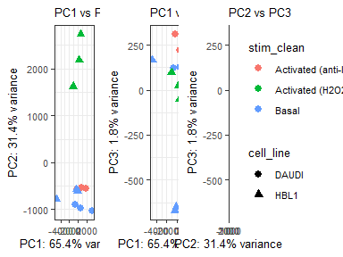
# Idea:
# Visualise proteins contributing to PCs
# Quality of representation: cos2 - size of dot
# Percentage contribution to one PC: contrib - colour of dot
# Select data
data_contrib_2.5p <- as.data.frame(pca_variab$contrib) %>%
dplyr::filter(Dim.1 >= 2.5 | Dim.2 >= 2.5 | Dim.3 >= 2.5) %>% # | Dim.4 >= 1 | Dim.5 >= 1
dplyr::rename(PC1 = Dim.1, PC2 = Dim.2, PC3 = Dim.3, PC4 = Dim.4, PC5 = Dim.5) %>%
dplyr::select(c(PC1, PC2, PC3)) %>%
mutate_all(function(x){x/100}) %>%
as.matrix()
data_contrib_prot <- factor(rownames(data_contrib_2.5p))
data_cos2_2.5p <- as.data.frame(pca_variab$cos2) %>%
rownames_to_column("target_nospace") %>%
dplyr::filter(target_nospace %in% data_contrib_prot) %>%
column_to_rownames("target_nospace") %>%
dplyr::rename(PC1 = Dim.1, PC2 = Dim.2, PC3 = Dim.3, PC4 = Dim.4, PC5 = Dim.5) %>%
dplyr::select(c(PC1, PC2, PC3)) %>%
as.matrix()
# Tidy data format
data_cos2_tidy <- as.data.frame(data_cos2_2.5p) %>%
rownames_to_column("target_nospace") %>%
pivot_longer(2:4, names_to = "PC", values_to = "cos2")
data_contrib_tidy <- as.data.frame(data_contrib_2.5p) %>%
rownames_to_column("target_nospace") %>%
pivot_longer(2:4, names_to = "PC", values_to = "contrib") %>%
mutate(contrib = contrib * 100)
data_contrib_all <- full_join(data_cos2_tidy, data_contrib_tidy) %>%
left_join(distinct(dplyr::select(fig5_data_id, c(target_nospace, target))))
fig5F_prot <- sort(unique(data_contrib_all$target))
fig5F_prot_label <- c("AMPKa1/2 (T183/T172)", "BLNK (Y84)", "BTK (Y551)", "CD38", "CD43", "GAPDH", "IgM", "LYN (Y397)", "PARP (D214)", "PKC-b1", "PKC-b1 (T642)", "S6 (S235/S236)", "SRC (Y416)", "VAV1 (Y174)", "ZAP70 (Y319)")
fig5F_PC_percent <- c(paste0("PC1\n(", pca_expl_var[1], "%)"),
paste0("PC2\n(", pca_expl_var[2], "%)"),
paste0("PC3\n(", pca_expl_var[3], "%)"))
# Figure
fig5_panelF <- ggplot() +
geom_point(data = data_contrib_all,
aes(x = factor(target, levels = fig5F_prot, label = fig5F_prot_label),
y = factor(PC, levels = rev(c("PC1", "PC2", "PC3")), labels = rev(fig5F_PC_percent)),
size = cos2, fill = contrib),
color = "black", pch = 21) +
scale_size_area(max_size = 3, breaks = c(0, 0.25, 0.5, 0.75, 1), name = "Quality of\nrepresentation\nin PCs") +
scale_fill_gradient(low = "#FEDA8B", high = "#73001a", name = "Percentage\ncontribution\nwithin one PC") + #7f2704 #67000d
labs(x = "", y = "") +
theme_bw() +
theme(legend.key.size = unit(0.2, "cm"), legend.spacing.y = unit(0.1, "cm"), legend.box.spacing = unit(0.1, "cm"), axis.text.x = element_text(size = 5.75), legend.title = element_text(size = 7), legend.position = "right") +
RotatedAxis() +
textsize_small
fig5_panelF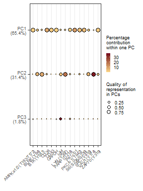
# Combine all panels of the figure
fig5_AC <- plot_grid(png_fig5_panelA, png_fig5_panelC, labels = PANEL_labels[c(1, 3)], nrow = 1, rel_widths = c(1, 1), label_size = 10)
fig5_ACleg <- plot_grid(fig5_AC, png_fig5_legend, nrow = 2, rel_heights = c(6.5, 1), label_size = 10)
fig5_BD <- plot_grid(fig5_panelB, fig5_panelD, labels = PANEL_labels[c(2, 4)], nrow = 1, rel_widths = c(1, 1), label_size = 10)
fig5_EF <- plot_grid(fig5_panelE, fig5_panelF, labels = PANEL_labels[c(5, 6)], nrow = 1, rel_widths = c(1, 1.2), label_size = 10)
fig5 <- plot_grid(fig5_ACleg, fig5_BD, fig5_EF, ncol = 1, rel_heights = c(2.2, 1.2, 1), label_size = 10)
fig5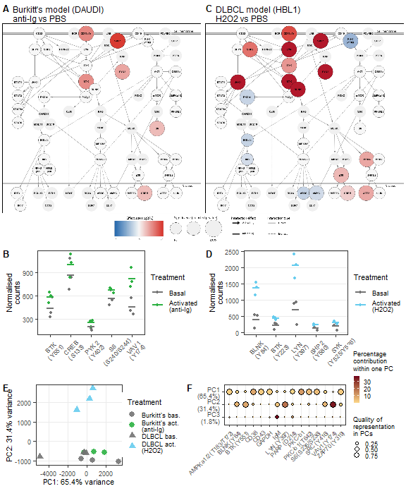
# Save figure as pdf, jpg, and png
ggsave(
fig5,
filename = "output/figures/main_fig5.pdf",
width = 6,
height = 7.25,
units = "in",
dpi = 300
)
ggsave(
fig5,
filename = "output/figures/main_fig5.jpg",
width = 6,
height = 7.25,
units = "in",
dpi = 300
)Figure 5: ID-seq reveals network-wide phosphorylation events upon activation of the B-cell signaling network.
# Remove unnecessary files to clear up memory
rm(list = ls(pattern = "fig5"))
rm(list = ls(pattern = "png"))
rm(list = ls(pattern = "results_"))
rm(list = ls(pattern = "volc_"))
rm(list = ls(pattern = "list_"))
rm(list = ls(pattern = "names_"))
rm(list = ls(pattern = "titles_"))
rm(list = ls(pattern = "data_"))
rm(list = ls(pattern = "heat_"))
rm(list = ls(pattern = "rld"))
rm(list = ls(pattern = "pca"))
gc() used (Mb) gc trigger (Mb) max used (Mb)
Ncells 11137960 594.9 17081285 912.3 17081285 912.3
Vcells 21648063 165.2 67685689 516.5 130989777 999.4Figure title.
Input: - BioRender schematic figures
… phosphoflow data
… ID-seq data
# Placeholder
fig0_panelA <- ggplot() +
geom_blank() +
scale_x_continuous(limits = c(0, 10)) +
scale_y_continuous(limits = c(0, 10)) +
# labs(title = "BCR signaling network") +
theme_bw() +
theme(axis.text = element_text(color = "white"),
axis.ticks = element_blank(),
panel.grid = element_blank()) +
textsize_small
# fig0_panelA
# PNG
png_fig0 <- image_read("output/figures/non_R_figs/xxx.png") %>%
image_ggplot()
# png_fig0# Select data
# Figure# Select data
# Figure# Combine all panels of the figure
fig0 <- plot_grid(panelA, panelB, labels = panel_labels[c(1, 2)], ncol = 1, rel_heights = c(1, 1), label_size = 10)
fig0
# Save figure as pdf, jpg, and png
# ggsave(
# fig0,
# filename = "output/figures/fig0.pdf",
# width = 6,
# height = 3,
# units = "in",
# dpi = 300
# )
ggsave(
fig0,
filename = "output/figures/fig0.jpg",
width = 6,
height = 3,
units = "in",
dpi = 300
)
# ggsave(
# fig0,
# filename = "output/figures/fig0.png",
# width = 6,
# height = 3,
# units = "in",
# dpi = 300
# )Figure title.
# Remove unnecessary files to clear up memory
rm(list = ls(pattern = "fig0"))
rm(list = ls(pattern = "png"))
rm(list = ls(pattern = "results_"))
rm(list = ls(pattern = "volc_"))
rm(list = ls(pattern = "list_"))
rm(list = ls(pattern = "names_"))
rm(list = ls(pattern = "titles_"))
rm(list = ls(pattern = "data_"))
rm(list = ls(pattern = "heat_"))
rm(list = ls(pattern = "rld"))
rm(list = ls(pattern = "pca"))
gc()
sessionInfo()R version 4.4.1 (2024-06-14 ucrt)
Platform: x86_64-w64-mingw32/x64
Running under: Windows 10 x64 (build 19045)
Matrix products: default
locale:
[1] LC_COLLATE=English_Netherlands.utf8 LC_CTYPE=English_Netherlands.utf8
[3] LC_MONETARY=English_Netherlands.utf8 LC_NUMERIC=C
[5] LC_TIME=English_Netherlands.utf8
time zone: Europe/Amsterdam
tzcode source: internal
attached base packages:
[1] grid stats4 stats graphics grDevices utils datasets
[8] methods base
other attached packages:
[1] png_0.1-8 magick_2.8.3
[3] ggridges_0.5.6 forecast_8.23.0
[5] zoo_1.8-12 ggcyto_1.32.0
[7] flowWorkspace_4.16.0 ncdfFlow_2.50.0
[9] BH_1.84.0-0 flowCore_2.16.0
[11] ashr_2.2-63 apeglm_1.26.1
[13] MASS_7.3-60.2 ggbreak_0.1.2
[15] geomtextpath_0.1.4 ggh4x_0.2.8
[17] cowplot_1.1.3 patchwork_1.2.0
[19] greekLetters_1.0.2 ggpubr_0.6.0
[21] ggrepel_0.9.5 scales_1.3.0
[23] ggthemes_5.1.0 RColorBrewer_1.1-3
[25] scico_1.5.0 viridis_0.6.5
[27] viridisLite_0.4.2 mmtable2_0.1.3
[29] gt_0.10.1 ggvenn_0.1.10
[31] rgl_1.3.1 plotly_4.10.4
[33] ggcorrplot_0.1.4.1 corrplot_0.92
[35] umap_0.2.10.0 ggplotify_0.1.2
[37] dendsort_0.3.4 vsn_3.72.0
[39] ComplexHeatmap_2.20.0 platetools_0.1.7
[41] kableExtra_1.4.0 DESeq2_1.44.0
[43] SummarizedExperiment_1.34.0 Biobase_2.64.0
[45] MatrixGenerics_1.16.0 matrixStats_1.3.0
[47] GenomicRanges_1.56.1 GenomeInfoDb_1.40.1
[49] IRanges_2.38.0 S4Vectors_0.42.0
[51] BiocGenerics_0.50.0 Seurat_5.1.0
[53] SeuratObject_5.0.2 sp_2.1-4
[55] rstatix_0.7.2 factoextra_1.0.7
[57] FactoMineR_2.11 readxl_1.4.3
[59] Matrix_1.7-0 lubridate_1.9.3
[61] forcats_1.0.0 stringr_1.5.1
[63] dplyr_1.1.4 purrr_1.0.2
[65] readr_2.1.5 tidyr_1.3.1
[67] tibble_3.2.1 ggplot2_3.5.1
[69] tidyverse_2.0.0 workflowr_1.7.1
loaded via a namespace (and not attached):
[1] vroom_1.6.5 nnet_7.3-19 goftest_1.2-3
[4] DT_0.33 TH.data_1.1-2 vctrs_0.6.5
[7] spatstat.random_3.2-3 digest_0.6.36 shape_1.4.6.1
[10] git2r_0.33.0 mixsqp_0.3-54 deldir_2.0-4
[13] parallelly_1.37.1 SQUAREM_2021.1 reshape2_1.4.4
[16] httpuv_1.6.15 foreach_1.5.2 withr_3.0.0
[19] xfun_0.45 ggfun_0.1.5 survival_3.6-4
[22] memoise_2.0.1 hexbin_1.28.3 RProtoBufLib_2.16.0
[25] emmeans_1.10.2 systemfonts_1.1.0 ragg_1.3.2
[28] GlobalOptions_0.1.2 quantmod_0.4.26 pbapply_1.7-2
[31] promises_1.3.0 scatterplot3d_0.3-44 httr_1.4.7
[34] globals_0.16.3 fitdistrplus_1.1-11 ps_1.7.6
[37] rstudioapi_0.16.0 UCSC.utils_1.0.0 miniUI_0.1.1.1
[40] generics_0.1.3 base64enc_0.1-3 processx_3.8.4
[43] curl_5.2.1 zlibbioc_1.50.0 polyclip_1.10-6
[46] quadprog_1.5-8 GenomeInfoDbData_1.2.12 SparseArray_1.4.8
[49] xtable_1.8-4 doParallel_1.0.17 evaluate_0.24.0
[52] S4Arrays_1.4.1 preprocessCore_1.66.0 fracdiff_1.5-3
[55] hms_1.1.3 irlba_2.3.5.1 colorspace_2.1-0
[58] urca_1.3-4 ROCR_1.0-11 reticulate_1.38.0
[61] spatstat.data_3.1-2 Rgraphviz_2.48.0 magrittr_2.0.3
[64] lmtest_0.9-40 later_1.3.2 lattice_0.22-6
[67] spatstat.geom_3.2-9 future.apply_1.11.2 getPass_0.2-4
[70] XML_3.99-0.17 scattermore_1.2 xts_0.14.0
[73] RcppAnnoy_0.0.22 pillar_1.9.0 nlme_3.1-164
[76] iterators_1.0.14 compiler_4.4.1 RSpectra_0.16-1
[79] stringi_1.8.4 tensor_1.5 plyr_1.8.9
[82] crayon_1.5.3 abind_1.4-5 truncnorm_1.0-9
[85] gridGraphics_0.5-1 emdbook_1.3.13 locfit_1.5-9.10
[88] bit_4.0.5 sandwich_3.1-0 whisker_0.4.1
[91] codetools_0.2-20 multcomp_1.4-25 textshaping_0.4.0
[94] TTR_0.24.4 openssl_2.2.0 bslib_0.7.0
[97] GetoptLong_1.0.5 mime_0.12 splines_4.4.1
[100] circlize_0.4.16 Rcpp_1.0.12 fastDummies_1.7.3
[103] tseries_0.10-56 cellranger_1.1.0 Rttf2pt1_1.3.12
[106] leaps_3.2 knitr_1.47 utf8_1.2.4
[109] clue_0.3-65 fs_1.6.4 listenv_0.9.1
[112] ggsignif_0.6.4 estimability_1.5.1 callr_3.7.6
[115] statmod_1.5.0 tzdb_0.4.0 svglite_2.1.3
[118] pkgconfig_2.0.3 tools_4.4.1 cachem_1.1.0
[121] numDeriv_2016.8-1.1 fastmap_1.2.0 rmarkdown_2.27
[124] ica_1.0-3 broom_1.0.6 sass_0.4.9
[127] coda_0.19-4.1 BiocManager_1.30.23 dotCall64_1.1-1
[130] graph_1.82.0 carData_3.0-5 RANN_2.6.1
[133] farver_2.1.2 yaml_2.3.8 cli_3.6.3
[136] leiden_0.4.3.1 lifecycle_1.0.4 askpass_1.2.0
[139] uwot_0.2.2 mvtnorm_1.2-5 backports_1.5.0
[142] cytolib_2.16.0 BiocParallel_1.38.0 timechange_0.3.0
[145] gtable_0.3.5 rjson_0.2.21 progressr_0.14.0
[148] parallel_4.4.1 limma_3.60.3 jsonlite_1.8.8
[151] RcppHNSW_0.6.0 bit64_4.0.5 multcompView_0.1-10
[154] assertthat_0.2.1 Rtsne_0.17 yulab.utils_0.1.4
[157] spatstat.utils_3.0-5 bdsmatrix_1.3-7 highr_0.11
[160] jquerylib_0.1.4 timeDate_4032.109 lazyeval_0.2.2
[163] shiny_1.8.1.1 htmltools_0.5.8.1 affy_1.82.0
[166] sctransform_0.4.1 glue_1.7.0 spam_2.10-0
[169] XVector_0.44.0 rprojroot_2.0.4 gridExtra_2.3
[172] flashClust_1.01-2 invgamma_1.1 igraph_2.0.3
[175] extrafontdb_1.0 R6_2.5.1 labeling_0.4.3
[178] bbmle_1.0.25.1 cluster_2.1.6 aplot_0.2.3
[181] DelayedArray_0.30.1 tidyselect_1.2.1 xml2_1.3.6
[184] car_3.1-2 future_1.33.2 munsell_0.5.1
[187] KernSmooth_2.23-24 affyio_1.74.0 data.table_1.15.4
[190] htmlwidgets_1.6.4 rlang_1.1.4 spatstat.sparse_3.1-0
[193] extrafont_0.19 spatstat.explore_3.2-7 fansi_1.0.6